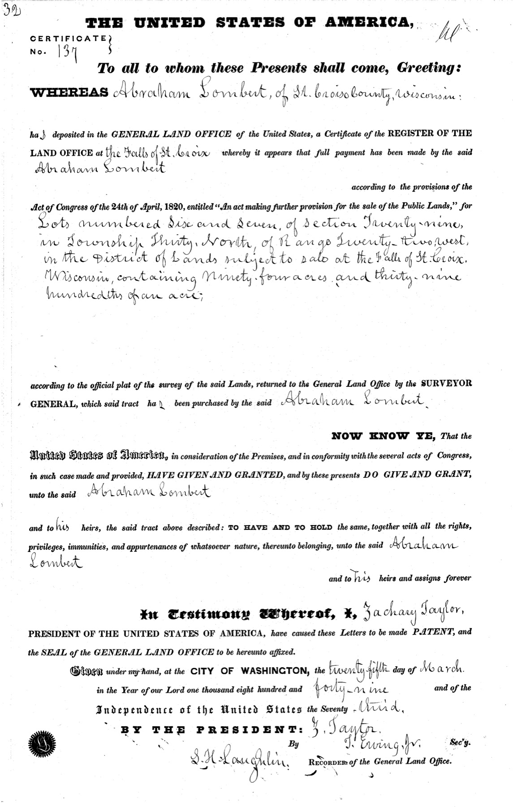
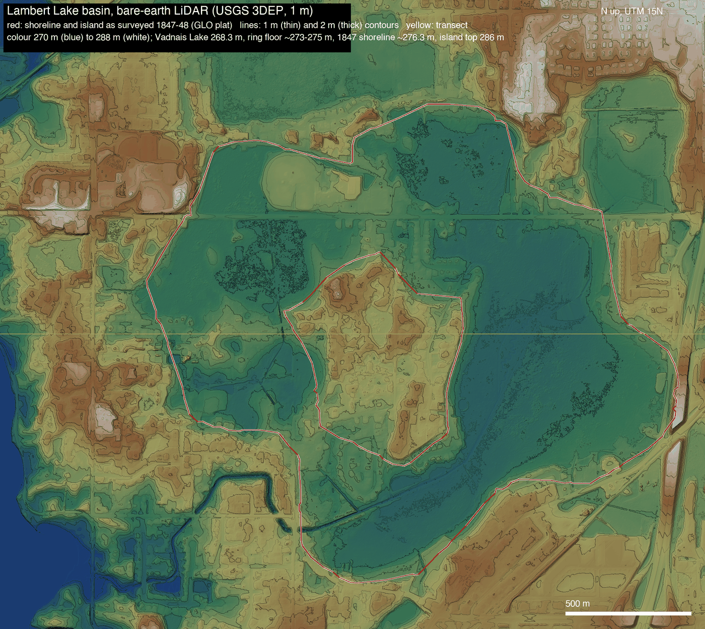

In December 1847 a government surveyor walked the shore of a lake north of St. Paul. It was shaped like a ring, about 530 acres of water around a 97-acre island. He gave it no name.2
Two years later a man named Abraham Lambert bought the island in the middle.
The family tree begins with Eustache Lambert, born about 1617 or 1618, probably near Boulogne, in the north of France.9
By 1646 he was paddling up the rivers to Sainte-Marie among the Hurons, the Jesuit mission near today's Midland, Ontario, where he served as an interpreter. In 1649, in the war that destroyed the Huron country, the mission was burned and abandoned.9
In 1653 he started over. He took a strip of riverfront at Pointe-Lévy, across the St. Lawrence from Quebec, and named the farm Sainte-Marie, after the mission of his youth.5, 9 He married Marie Laurence in 1656, and his farm became a meeting place for Huron and Algonquin traders passing Quebec. He died at Quebec in July 1673.
more
The grant was eight arpents of river frontage by forty deep, roughly a third of a mile by a mile and a half, and the only rent was a tenth of his eels. He was fishing there by 1651. The family tree gives his death as 6 June 1673; the Dictionary of Canadian Biography gives 6 July.
Six generations lived on the Lauzon shore, father to son, from Eustache to Abraham.
more
Eustache's eldest son, Gabriel, ran Sainte-Marie from the age of twenty and lived his whole life there, a man "of gentle and quiet ways." Next door farmed Jean Dumets, the ancestor of the Demers family.5 Gabriel's son Louis-Joseph, known as Monsieur de Sainte-Marie, was commanding the south-shore militia when Wolfe's army came up the river in 1759.5
From there the family tree traces the line down, father to son, to Joseph Lambert and Judith Magnan.17 Their son Abraham was born at Lauzon on 5 June 1792,6, 18 the sixth generation on that shore, and grew up to farm it.
Roy warns that more than one unrelated Lambert family lived in the seigneury, so the links from Eustache down to Abraham's father still need checking against the original parish registers. In 1759 the families of the shore spent five months hiding in the woods while British guns on the Lévis heights fired across at Quebec; Louis-Joseph died the next January, still in command. In 1776 the King's commissioners struck off a Pointe-Lévy militia captain named Joseph Lambert for serving the American "Rebels"; which Lambert he was is not known, and he is probably where the family tree's "Patriot" comes from.5, 17
On 22 January 1822, at Saint-Nicolas, Abraham married Rose Angèle Demers, the daughter of Michel Demers and Rosalie Foucher. He was twenty-nine. He married into a big family: in the years after, he stood as a witness at her brothers' and sisters' weddings.6
Their first child, a girl, was born the next May and baptized Rosalie, after her grandmother. Her godparents were her two grandparents, Judith Magnan and Michel Demers. She is very probably the Rose Angélique of the rest of this story.
more
The children, as the family tree and the gravestones list them: Rose Angélique (1823), Louis Abraham Thomas (1825), Félicité (1833), Pierre (1833), Le Sanges (1834), Esther (1835), Elizabeth (1837), Joseph Modeste (1838), and Marie (1849, at Little Canada). The county history counts six children on the journey west.10, 17, 18
In November 1828 the bishop planted the cross for the church of a new parish, Saint-Jean-Chrysostome, in the village of Beaulieu, on la terre d'Abraham Lambert, the land of Abraham Lambert. It was very probably this Abraham; Esther was born in that parish. The neighbors argued the spot was too far from the middle, and the next summer the site moved.5
Then came hard years. Cholera reached Canada in June 1832 and killed twenty-five people at Pointe-Lévy and thirteen at Saint-Nicolas by July, the Lamberts' two parishes. The harvests failed three years running. In 1834 a member told the Assembly he had seen fields at Saint-Jean-Chrysostome "entirely destroyed by hail," and that even the potatoes had failed.5 Abraham and Rose Angèle had small children then: Félicité was born in 1833, Esther in 1835.
Rose Angèle's younger brother, Modeste Demers, had become a priest. In 1838 he set out across the continent with Father François-Norbert Blanchet, to serve the French-Canadian farmers settled in the Oregon Country.7, 6 That January, Abraham and Rose Angèle had named their newborn son Joseph Modeste, very likely for his uncle.
The missionaries' letters came home in print, in the yearly report of Quebec's mission society. The report of January 1840 described the country in words a farmer would remember:8
très-propre à recevoir des colons ; le climat est doux, le sol fertile
"well suited to settlers; the climate is mild, the soil fertile." Rapport sur les missions du diocèse de Québec, January 1840
In 1841 Abraham was forty-nine, on the shore where his people had lived for almost two hundred years. The record doesn't say why he left. The hungry years were fresh, the old seigneury was full, and his wife's brother was a priest among Canadien farmers in a mild, fertile country. Likely all of it weighed on him. That year, he went.
Abram Lambert with his family of wife and three sons and three daughters left Lower Canada, in 1841…
Neill, History of Ramsey County, 1881
They went up the St. Lawrence by steamer, changing to a stage around each rapid above Montreal, then crossed Lake Ontario and took a little railroad past Niagara to Buffalo.24 There they boarded one of the big lake steamers that lived on emigrants and their farm tools: about a week on the water, past Detroit and around by Mackinac to Chicago.25
The stops and years are recorded; the roads and days are reconstructed. Solid lines are documented, dashed lines the likeliest way.10, 23
In the spring of 1842 they went on up the Mississippi, about 660 river miles, to the landing under Fort Snelling. Boats that far north were still rare, so they probably changed boats at Galena and waited.26
They came via boat to St. Paul, then to Red River with the idea of seeking a home in Oregon.
Neill, 1881
The way north was by ox cart, up the Minnesota valley and across the plains to the Red River, at about fifteen miles a day.28, 29 Red River was the jumping-off place for Oregon. But its own emigrant party, 121 people under James Sinclair, had left the summer before, and the Hudson's Bay Company sent no second party for years.27
So the Oregon plan ended there. The family "were persuaded to give up the trip on account of the dangers that beset their way."10 Who persuaded them is not known. Bishop Provencher, who had sent Modeste west, may have been one of them.7
They stayed about three years at St. Boniface, the bishop's parish across the river from Fort Garry. On 26 November 1844 Rose Angélique, the eldest, married Louis Alexander Ducharme there. He had grown up as the bishop's ward.11
In 1845 the Ducharmes started south for Minnesota and, as a local history tells it, brought Rose's mother and father and their children with them.11 The cart brigades left in early June, when there was grass for the oxen: about 450 miles, about five weeks.29 No one wrote down their trail. The map follows the Woods Trail, the traders' road after a fight on the open plains the year before; the dotted line is the plains road they might have taken instead.28
They stopped among the French-Canadian families around Lake Gervais, north of St. Paul. Abraham settled on the west shore, with the Ducharmes nearby, four years after leaving Lauzon.10, 11
On a single day, 25 March 1849, the government issued Abraham two land patents. One was for his farm on Lake Gervais. The other was for the whole island in the middle of the ring lake, three miles north.1 No one else bought land at that lake for four more years.


The clerk wrote his name as "Abraham Lombert, of St. Croix County, Wisconsin": Minnesota Territory was only three weeks old. The patent, in the name of President Zachary Taylor, grants the island to him "and to his heirs and assigns forever."1 Click the page to see it large.
The patent's two lots are exactly the island. The surveyor wrote their acres on the plat, and they add up to the patent's figure to the hundredth of an acre.2
Abraham bought the whole island.
Home was the farm: about ninety acres on the west shore of Lake Gervais.1 Abraham became one of the little settlement's steady hands. In 1850 the county named him an election judge for Little Canada. He was appointed to run its new post office, remembered later as the first in Minnesota outside St. Paul,4 and in 1851 he helped oversee the building of the road to White Bear.12
Until then the French Canadians' church was Father Galtier's log chapel in St. Paul. When Little Canada founded its own parish, St. John the Evangelist, in October 1851, Abraham gave twenty acres for its cemetery, and the logs for the first church came from his land, "the large logs hauled by sleighs over the snow."11
A local history calls him "the stubborn Abraham Lambert." When the new church began charging pew rent in 1852,
Abraham Lambert objected to paying it but, not wanting to miss Mass, he built himself a folding chair and every Sunday carried it to church, set it up, then carried it home again.
Wall, Ramsey County History, 1964, from a Lambert family manuscript
The island did not stay in the family long. By 1867 the county map lettered the water Lambert's Lake, and put another man's name, P. Jervais, on the island.19 When it was sold, and why, is in the county deed books, which have not yet been read.
When Abraham bought the island, the water around it was probably three to six feet deep over most of the ring, eight to eleven in the east pocket: a lake you could pole a boat across and touch bottom almost anywhere. It was the last few feet of water on a basin that had been filling with peat for 9,000 years, and the island was a hill the glaciers left behind, with oaks on top.15


The basin today, from the state's elevation survey: the hollow of the ring and the hill of the island.
more
Nobody ever measured the depth. The surveyor's line along the shore in 1847 still sits at about 906 feet above sea level on both sides, and the floor of the basin today lies a few feet below it. The peat runs ten to twenty-five feet deep in the wetlands along Lambert Creek.
The city drank it first. In 1870 the St. Paul Water Company ran a canal to Lambert Lake and counted it among the lakes "tributary to St. Paul." The lake sat about thirty feet above Vadnais, so a canal between them was a drain.14
Abraham died at Little Canada at the end of August 1875, at eighty-three, and was buried at St. John's, in the cemetery on the land he had given. Rose Angèle died the next August.18 He may have lived long enough to see the lake that carried his name begin to fall.
Eleven years after the canal, the county history wrote the lake's first obituary:
has since been drained into Vadnais lake, so much so that a large portion is now occupied as meadow lands.
Neill, History of Ramsey County, 1881
Then a farmer finished the job. In the winter of 1893–94 A. K. Barnum, who by then owned the island and nearly the whole shore, hired a man to dig more than a mile of ditch to Lake Vadnais, through springs and quicksand, "for the purpose of draining the former." The two ended up before the Minnesota Supreme Court over the bill.14
By 1899 the government's mapmakers found only marsh. They drew reeds where the ring had been, and one contour line around the island.20
In 1916 Ramsey County dug its own ditches through the old bed, and more in 1927. From the 1930s a developer sold house lots on the dry ground.14
In 1957 the Lake Vadnais area voted to become a village: Vadnais Heights.16
Then came the freeway. Interstate 35E was built past the old lake beginning in 1964.16
The ditch that drained the lake is Lambert Creek now, and in 2021 crews dug its bends back in. A pond sits in the old footprint, and a scrap of open water, less than an acre, is still listed by the county as Lambert Lake.14
The island left the family within twenty years, and the lake is nearly gone. The name stayed: on the maps, on the creek, on the pond. The county history of 1881 gave the credit to the son:
This lake was named in honor of Louis Lambert, who purchased a portion of the island located near its center in an early day.
Neill, 1881
The only purchase on record is his father's. Either way, it is the family's name.1, 10
And the family went on.
- Eustache Lambert about 1618–1673, from near Boulogne to Pointe-Lévy; m. Marie Laurence, 1656
- Gabriel Lambert, Sieur de Sainte-Marie 1657–1719; m. Françoise-Renée Roussel, 1683
- Louis-Joseph Lambert, Monsieur de Sainte-Marie 1695–1760; m. Geneviève Rouer de Villeray, 1722
- Louis-Joseph Lambert 1725–1817; m. Marie-Thérèse Frontigny
- Joseph (Louis-Joseph) Lambert born 1749; m. Judith Magnan, 1777
- Abraham Lambert 1792–1875, Lauzon to Little Canada; m. Rose Angèle Demers, 1822
- Louis Abraham Thomas Lambert 1825–1900
- David J. Lambert 1871–1928
- Joseph Eugene Lambert 1894–1968, Cloquet
- Marjorie Jane (Lambert) Delyea 1919–1998
- Mary Elizabeth Richey born 1950
more
The line follows the family tree, with the 1822 marriage and Abraham's parents from the Saint-Nicolas register and the early generations from Roy's history of the seigneury. More than one unrelated Lambert family lived in Lauzon, so the links from Eustache to Abraham still need checking against the original parish registers.5, 6, 17
From Lake Gervais the family went north, to the forests and mill towns of northern Minnesota.
Part of Abraham's 1849 farm is a county park now, on Edgerton Street by Lake Gervais. The family calls it Abraham's Park. William and Alex pass it every day on the way to school.
And Eric Richey, the twelfth generation from Eustache, lives at 3921 Woodview Ct in Vadnais Heights, about 0.84 miles from the island Abraham bought in 1849.
Explore every map yourself. Below, every map of the lake from 1856 to 2026 sits on one frame: play it through, drag the year, or split the screen between two years.